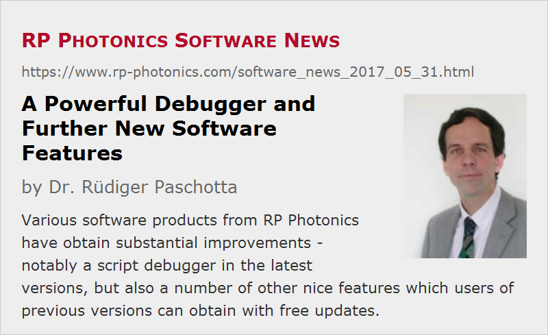

A Powerful Debugger and Further New Software Features
Posted on 2017-05-31 in the RP Photonics Software News (available as e-mail newsletter!)
Permanent link: https://www.rp-photonics.com/software_news_2017_05_31.html
Author: Dr. Rüdiger Paschotta, RP Photonics Consulting GmbH
Abstract: Various software products from RP Photonics have obtain substantial improvements - notably a script debugger in the latest versions, but also a number of other nice features which users of previous versions can obtain with free updates.

In recent months, I did heavy programming work – not for a new software product, but for improving the existing ones. Now it is time to report some news.
(Note: the next posting on 2017-07-13 described further very substantial improvements!)
All of the news are related to script programming. I emphasize that our software can also well be used with convenient forms. It is only that script programming gives you an amazing level of flexibility, which can probably not be achieved in any other way. Therefore, some of our users heavily engage in that – and will presumably be quite happy about these news.
The Debugger
The most important new feature – applicable to RP Fiber Power, RP Resonator, RP Coating and RP ProPulse – is the new script debugger. For longer while I thought that this would be nice to have – it was just an awful amount of work to implement it, but it came out very nicely.
The general idea of a software debugger is probably always that you can execute things step-by-step and inspect the state of the system at any time. In our case, an interesting question was exactly what one “step” should be. The straightforward interpretation is that it is one command. However, this turned out to be insufficient, since a lot of sophisticated programming can be done on the level of expressions. In many cases, you really want to trace the evaluation of complex expressions – containing nested loops and the like – rather than only getting the final result reported, e.g. when the value of the expression is assigned to a variable. This is often relevant for user-defined functions, for example.
Therefore, I implemented features for two different debugging methods:
- The first one allows you to execute one command at a time. You can put “breakpoints” into your code (“@” signs at the beginning of lines) where the software goes into debug mode, allowing you to inspect the system and to decide on what to do next. You can also get into debug mode by pressing Ctrl-B or by using some new buttons.
- The second method provides debugging within expressions. Here, breakpoints are defined by calls of the new function debug(). That concept turned out to be more flexible than just putting a certain breakpoint character into the code: you can easily get conditional breakpoints (just calling the function only under certain conditions), and also the function can submit a calculated message, informing you more closely about the state of the system.
The screenshot on the right side shows the inspector tool when used with the second debugging method.
The system is really worked out very nicely. There are many convenient features, for example for quickly evaluating further steps and only stopping again at a temporary breakpoint – for example, behind a loop, where you want to avoid going through all the many loop executions.
On our website, there is a page with more details on the new debugger.
The debugger is contained in the latest version of the mentioned software products (e.g. RP Fiber Power V7). Existing users will soon obtain very fair upgrade offers; as always, we charge for such an upgrade only little more than the difference in license prices (while other software companies would regularly try to get half of the full cost, or even more than that, even if the license price was raised only slightly for the new version). Note also that we do not have maintenance charges. We enjoy having very happy users, and hope that they will help spreading the message.
For all the following features, you do not need to have a new software version – just ask for a free update:
Improved Code Formatting
When implementing the debugger, I came across a nice idea: it has now become possible to use additional indentation of script code for making it more readable.
The old rules were simply that a command always has to start at the beginning of a line, and that following indented lines (i.e., beginning with at least one blank character) are interpreted as belonging to the same command.
It turned out, however, that for programming control structures (e.g. loops or if-then-else statements) on the level of commands it is desirable to additionally indent the inner parts. So this is now allowed (and recommended). Here is an example piece of such code, just for demonstrating that feature:
if alpha > 0 then
begin
sum := 0
for j := 1 to N do
sum := sum + f(j, alpha)
show "Result: ", sum:d3
end
By the way, recently I decided to change my standard formatting of script code. One measure was to insert many more blank characters – for example, before and after most operators. Another improvement is to modernize the formatting of control structures.
For example, instead of
for j:=1 to N do sum:=sum+f(j,alpha)
I would now write:
for j := 1 to N do sum := sum + f(j, alpha)
Although it takes substantially more space, it is definitely easier to read – and that is of course the most important aspect, since we often spend a lot of time to read code, trying to understand it or to locate an error.
Apart from the new indentation rule, these improvements did actually not require any changes in the software, but a lot of work for reformatting existing demo scripts, parts of the PDF manual is an interactive help systems, and web pages. With a software update, you will get the reformatted demo scripts.
New Control Structures
The script language was already providing the essential control structures: if-then-else, for-do, while-do and repeat-until. However, I introduced two more:
- The “goto” statement can be convenient for some “quick fixes”, although it is generally not a good replacement for if-then, for example. A special feature is that the jump target can be a calculated string; so you may e.g. use goto (“POINT” + str(j)), and that could lead you to the line containing :POINT17, if j was 17.
- The new command “terminate” allows you to terminate the script execution or even the program, and the latter possibly delayed until the execution (including the generation of graphics) is finished. One can also deliver an error code which can e.g. be checked by a batch job calling the software.
There's also a new command line parameter /e, allowing you to directly execute a script (without requiring a manual intervention). So you could call the software in an automated manner such that it executes a script, which could e.g. process some data from a prepared file, writes results into another file and terminates when finished.
Character Map
This was briefly mentioned once before: the Edit menu now contains the item “Character map”. With that, you can select some class of characters and then pick special characters for insertion into your script. As full Unicode encoding has been introduced, you can now insert essentially any characters into scripts – even the many Chinese or Japanese ones, for example.
One user is indeed using that feature to make nice custom forms for his Japanese colleagues.
Suggestions for Further Improvements?
It happens that our users make interesting suggestions for convenient new features. You are always welcome to send those; there will certainly be considered!
I would also be glad to find out to which extent there is an interest in a MATLAB interface. You may know that some programs offer such an interface, essentially in order to acquire a scripting capability. (You would then control the execution flow from MATLAB, and possibly further processed later there, while the actual calculations are done in the other software.) In case of our software, that does not seem to be required, since our software already has very convenient scripting capabilities. I assume that it is normally much more convenient to do the whole job within our software, avoiding any interfacing. However, some users may have different opinions on that – you are welcome to tell me about them!
This article is a posting of the RP Photonics Software News, authored by Dr. Rüdiger Paschotta. You may link to this page, because its location is permanent.
Note that you can also receive the articles in the form of a newsletter or with an RSS feed.
|  |
If you like this article, share it with your friends and colleagues, e.g. via social media:
These sharing buttons are implemented in a privacy-friendly way!